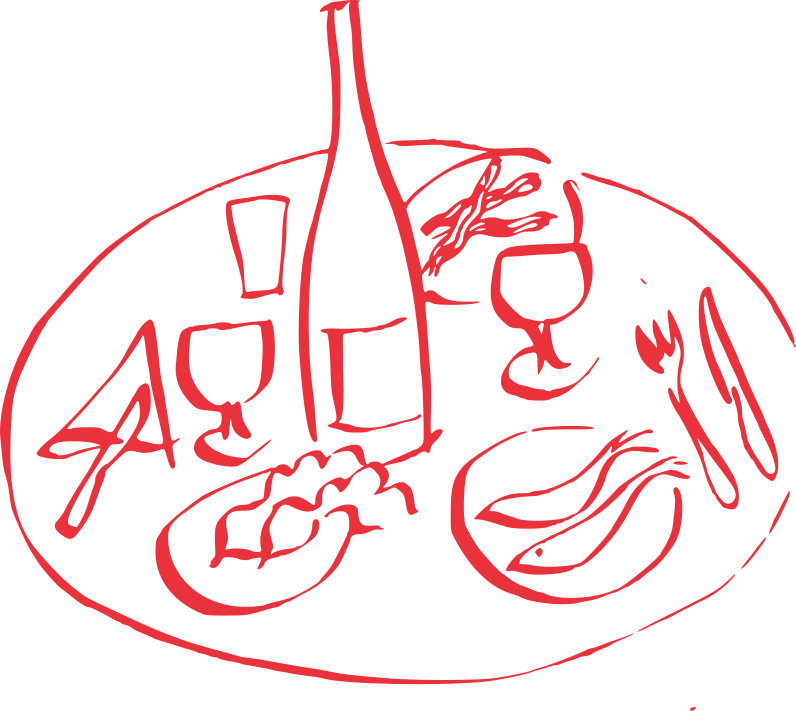
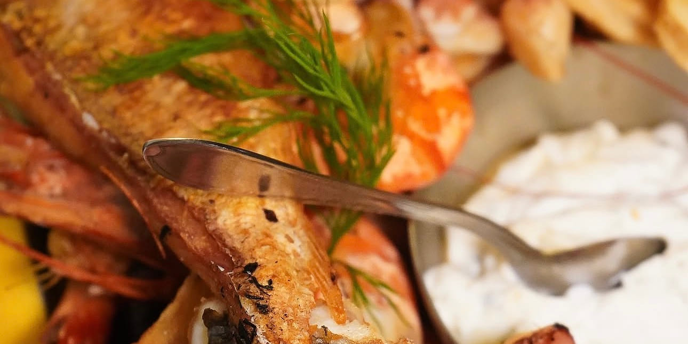

La carte de L’Étoile, à Lausanne
Dix familles de plats, des entrées aux fondues. Les pâtes sont fraîches, les prix sont affichés en entier : vous savez avant d’entrer.
Les entrées
-
Salade verte5.—
Salade de saison, sauce française maison
-
Salade mêlée8.50
Salade de saison et mélange de crudités, sauce française maison
-
Assortiment de légumes grillés à l’italienne12.—
Courgettes, aubergines, poivrons, oignon, ail et huile d’olive
-
Focaccia à l’ail & mozzarella14.—
Huile d’olive, gros sel, ail et romarin — idéal à partager
-
Roulée d’aubergine & bufala15.—
Aubergines grillées farcies à la bufala et tomate fraîche, gratinées au four
-
Carpaccio de bœuf16.—
Roquette, écailles de Grana Padano
-
Burrata façon caprese parfumée truffe17.—
Burrata, tomate fraîche, basilic, câpres et roquette
-
Crevettes à l’espagnole17.—
Crevettes à l’ail et poivrons
-
Assortiment de charcuterie et fromage19.—
Sélection fromage et charcuterie
Assiettes froides
-
Assiette de crudités végétarienne17.—
Mélange de crudités de saison
-
Salade de chèvre chaud au miel22.—
Salade de saison, œuf, cherry, figues, noix, chèvre et miel
-
Salade César25.—
Poulet grillé, œuf, croûtons, carottes, tomate, parmesan frais, sauce César
-
Salade Fitness29.—
Grande salade de crudités et légumes, fines tranches de bœuf grillé, vinaigrette
-
Tartare de bœuf classique30.—
Servi avec frites, beurre et toasts grillés
-
Tartare de bœuf parfumé au gin32.—
Servi avec frites, beurre et toasts grillés
-
Tartare de bœuf saveur truffe34.—
Servi avec frites, beurre et toasts grillés
Pasta
Possibilité sans gluten. Suppléments : crevettes +7.— · poulet +7.— · burrata +5.—
-
Linguine aglio, olio e pepperoncino à l’Étoile19.—
Ail, tomate cherry, basilic
-
Rigatoni Arrabbiata19.—
Sauce tomate au basilic pimentée
-
Gnocchi au gorgonzola22.—
Sauce onctueuse au gorgonzola
-
Tagliatelle fraîches alla carbonara22.—
Carbonara façon française, à la crème, sans œuf
-
Orecchiette à la bolognaise et parmesan frais24.—
Mijoté de bœuf à la tomate et basilic
-
Paccheri du Patron24.—
Façon ottomane, saucisse de bœuf fumée (soudjouk) et crème fraîche
-
Rigatoni alla vodka24.—
Crème tomatée à l’origan et vodka
-
Gnocchi au pesto & burrata25.—
Pesto de basilic et roquette, burrata et fricassée de noix
-
Fagottini à la truffe26.—
Pâtes farcies à la truffe, crème de truffe noire
-
Paccheri à la pistache & crevettes27.—
Pesto de pistache maison (pistaches siciliennes), crevettes sautées
-
Paccheri au saumon et aneth27.—
Saumon fumé et saumon frais, citron et aneth
-
Linguine alle vongole & cherry28.—
Vongole, déglacé au vin blanc, ail, persil et piment
-
Linguine du Chef façon péruvienne28.—
Sauté de bœuf, oignons, poivrons, champignons, courgette, piment, sauce soja
-
Tagliatelle aux pointes de morilles28.—
Sauce crémeuse aux pointes de morilles et parmesan frais
-
Linguine frutti di mare30.—
Vin blanc, tomate cherry, ail et fruits de mer mixtes
-
Paccheri à l’homard et fricassée de gambas34.—
Demi-homard, gambas et vongole, sauce à l’armoricaine

Risotto
-
Risotto aux morilles23.—
Crème fraîche, pointes de morilles
-
Risotto au saumon fumé et gambas26.—
Saumon gravlax et fricassée de gambas
-
Risotto à la milanaise et jambon cru29.—
Risotto au safran, jambon cru
-
Risotto Chicken Alfredo31.—
Crème fraîche, champignons et poulet
Poissons et fruits de mer
-
Moules marinières & frites28.—
Salade en entrée, moules, céleri, persil, frites
-
Filets de perche meunière31.—
Sauce tartare et frites
-
Filets de dorade à la crème citronnée36.—
Filet sans arêtes, garniture au choix
-
Gambas à l’ail mi-décortiquées et citron vert38.—
Servi avec frites et légumes
-
Gambas et calamars grillés à l’ail42.—
Servi avec risotto au safran
-
Plateau de fruits de mer grillés et poisson49.— / pers.
Gambas, poulpes, calamars, moules, filet de loup de mer, sauce tartare. Salade en entrée, garniture au choix
Viandes
-
Émincé à la zurichoise de poulet28.—
Poulet grillé, sauce aux champignons de Paris, riz et légumes
-
Paillard de poulet à l’ail et citron29.—
Marinade à l’ail maison, tagliatelle au beurre
-
Tagliata de bœuf à l’italienne36.—
Entrecôte suisse taillée, roquette, parmesan, crème balsamique, légumes et frites
-
Entrecôte de bœuf38.—
Garniture au choix, sauce en extra
-
Entrecôte de bœuf sauce café de Paris38.—
250 g, garniture au choix
-
Filet de bœuf48.—
Garniture au choix, sauce en extra
-
Grillade de viandes mixtes55.— / pers.
Bœuf, cheval, poulet, agneau. 3 sauces et garniture au choix
-
Côte de bœuf Tomahawk irlandaise130.—
Maturée 2 mois minimum, environ 1,2 kg. 3 sauces et garniture au choix
-
Côte de bœuf maturée de Galice150.—
Maturée 2 mois minimum, environ 1,2 kg. 3 sauces et garniture au choix
Nos ardoises
Sauces servies : beurre café de Paris, poivre vert, champignons.
-
Entrecôte de bœuf sur ardoise43.—
Salade en entrée, 220 g, garniture au choix et ses sauces
-
Filet de bœuf sur ardoise53.—
Salade en entrée, 220 g, garniture au choix et ses sauces
Fondues à discrétion
Sauces à fondue : cocktail, ail, tartare, curry.
-
Fondue bourguignonne38.—
Cheval, bœuf, poulet, garniture au choix et sauces à fondue
-
Fondue chinoise38.—
Cheval, bœuf (crevettes et poulet sur demande), garniture au choix et sauces
Garnitures & sauces
Valable sur les viandes, les fondues et le menu enfant. Garniture au choix, comprise : pâtes au beurre ou à l’ail · frites · riz · risotto · légumes.
Sauces en supplément
- Beurre maison3.—
- Poivre vert5.—
- Champignons5.—
- Morilles8.—
Une table ce soir ?
La réservation se fait par téléphone, du lundi au samedi.
Midi 11h45 – 13h30
· Soir 18h45 – 22h00 (22h30 vendredi et samedi).